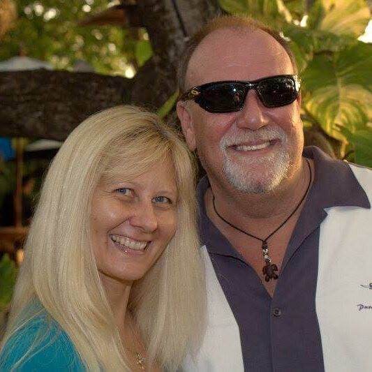
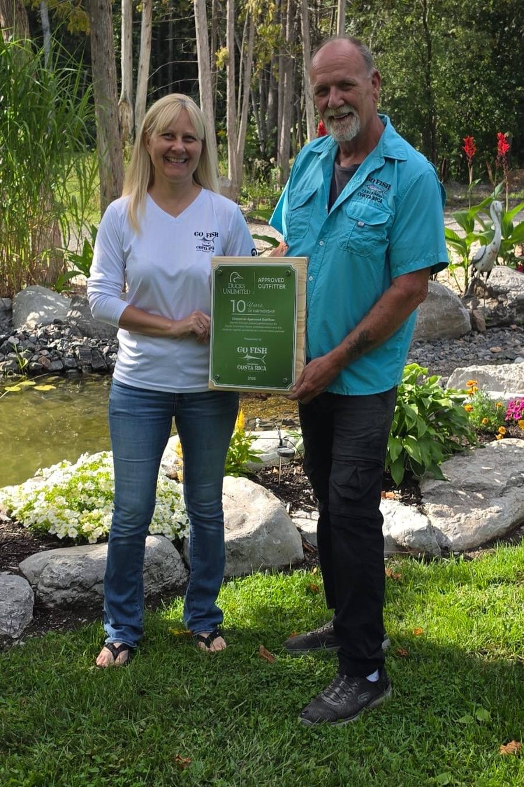

Our journey started in 2004. After countless trips down, we made the audacious decision in 2010 to say goodbye to our Canadian life and dive headfirst into Costa Rica.
Over the years we have dabbled in a few ventures: a vibrant restaurant (not exactly smooth sailing) and one of Costa Rica's premier bed and breakfasts. Then we found our true calling, running one of the most sought-after sport fishing charter services in the region. We are anglers first. That is why we do this.
We are your one-stop shop for adventure and relaxation on the Gold Coast. We handle the boats, the tours, dinner reservations, car rental recommendations and the little things that make a week here effortless. Prefer to soak it in from your villa? Want a town tour? Want to know which beach the locals surf? Ask.
Every client we have served has become a friend, and we intend to keep it that way. Whether you are after adrenaline or a hammock, our job is to make sure your trip is nothing short of extraordinary.
Ten years as a Ducks Unlimited partner and counting. We live here, our kids grew up here, and we put money and time back into the town that made this possible.